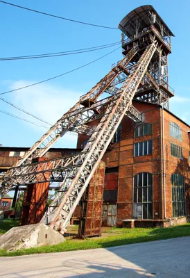
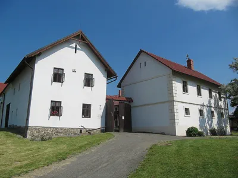

The scientific programme of the meeting comprises talks organized into ten sessions or symposia, two poster
sessions, and two award ceremonies.
Highlights of the programme include:
-
A symposium on (endo-)symbiosis sponsored by the Gordon and Betty Moore Foundation (GBMF).
For practical reasons, the symposium will be divided into two parts, held on Thursday morning (September
17) and Friday morning (September 18).
-
A symposium on Tuesday afternoon dedicated to the memory of Prof. Michael (Mike) Gray
(Dalhousie University, Halifax, Canada), a true gentleman of endosymbiosis and organellar research, who
sadly passed away on June 30 this year.
-
A symposium on Thursday afternoon commemorating Prof. Karel Šulc, an
Ostrava-based pioneer of insect endocytobiology.
-
The Miescher-Ishida Award ceremony on Tuesday afternoon. We are
delighted to announce that the 2026 laureate is
Prof. Eva C. M. Nowak (Heinrich-Heine-Universität Düsseldorf).
LOCATION OF THE ACTIVITIES
-
Atrium (the large central hall on the first floor of the faculty
building): registration, welcome party, poster sessions, coffee breaks, and lunches.
-
Lecture Hall M-240 (second floor of the faculty building): all
scientific sessions and symposia, the award ceremonies, and the ISE members' business meeting.
Monday, September 14
15:00-20:00
Registration
18:00-21:00
Welcome Party
Tuesday, September 15
8:45-9:0000
Welcome Address (Marek Eliáš)
9:00-10:300
Genome Evolution in Endosymbiosis (chair: Peter G. Kroth)
9:00-9:3000
Frederik Schulz: Uncovering the symbiont continuum through genome-resolved metagenomics.
9:30-9:4500
Heroen Verbruggen: Nuclear-organellar mechanisms driving radical plastid genome reduction in green algae.
9:45-10:000
Eliška Maturová: Recurrent alterations of the genetic code in organelles.
10:00-10:15
Michał Karlicki: Novel genomes of Epithemia and its close relatives elucidate
potential evolutionary mechanisms driving co-evolution between nitrogen-fixing endosymbionts and their
hosts.
10:15-10:30
Louison Nicolas-Asselineau: Unique lineage split leads to metabolic complementarity in respiratory protist
endosymbionts.
10:30-11:00
Coffee Break
11:00-12:30
Primary Plastids (chair: Dovilė Barcytė)
11:00-11:30
F. Vanessa Loiacono: An integrative approach to plant organellar RNA polymerases: evolution, function and
engineering.
11:30-11:45
Sien Audoor: Inhibition of chloroplast DNA replication disrupts multiple fission cell cycle in
Chlamydomonas reinhardtii: a time-resolved multi-omics study.
11:45-12:00
Ron Mizrahi: ISE1 is a plastid, not mitochondrial, DEAD-box RNA helicase essential for rRNA maturation and
ribosome biogenesis.
12:00-12:15
Mitsumasa Hanaoka: Endosymbiotic evolution of light and circadian clock-dependent transcriptional
regulation in chloroplasts.
12:15-12:30
Yoshiki Nishimura: Chloroplast nucleoid remodeling facilitates chloroplast DNA transmission during cell
division.
12:30-14:00
Lunch
14:00-15:45
Mike Gray Symposium (chair: John M. Archibald)
14:00-14:15
John M. Archibald: Life and work of Michael Gray (1943-2026).
14:15-14:30
Vladimír Hampl: Evolution of the protein import into euglenid chloroplasts.
14:30-14:45
Hassan Hashimi: The MICOS complex is the master regulator of mitochondrial crista maturation.
14:45-15:00
Oren Ostersetzer-Biran: Evolution of RNA splicing regulation in plant mitochondria: implications for
eukaryogenesis and land plant adaptation.
15:00-15:15
Seda Mirzoyan: Mitochondrial RNA editing in the phylum Heterolobosea.
15:15-15:30
Marek Eliáš: Evolutionary variation of the SRP and TAT protein targeting systems in mitochondria.
15:30-15:45
Ragul Ravikumar: New diversity and mitochondrial genome evolution in Bicosoecida.
15:45-16:40
Poster Session I (odd-numbered posters) + Coffee
16:45-18:00
Miescher-Ishida Award Ceremony (chair: Peter G. Kroth)
16:45-17:00
Goeffrey I. McFadden: Laudation of Prof. Eva C. M. Nowack
17:00-17:10
Peter G. Kroth: Miescher-Ishida Prize presentation
17:10-18:00
Eva C. M. Nowack: Miescher-Ishida Prize lecture
18:00-19:00
ISE Members Business Meeting
19:30-21:00
Night Zoo Excursion (optional)
Wednesday, September 16
8:45-10:300
Host-Endosymbiont Integration (chair: Yuji Inagaki)
8:45-9:0000
John M. Archibald: Endocytobiology of a tripartite symbiosis in Paramoeba.
9:00-9:1500
Miroslav Oborník: Photoparasitism and the evolution of Apicomplexa.
9:15-9:3000
Małgorzata Chwalińska: Discovering the nature of a ciliate-green alga photosymbiosis using single-cell
sequencing.
9:30-9:4500
Yoji Okabe: Photosynthetic metabolism operates in vertebrate embryos.
9:45-10:000
Dagmar Jirsová: Spatial proteomics of SAR: glycolysis walks a different road.
10:00-10:15
Ugo Cenci: Comparative biochemistry (of storage polysaccharide): a path to understand plastid
endosymbiosis.
10:15-10:30
Dorsaf Ennaceur: Membrane transport proteins of Chromera velia.
10:30-11:00
Coffee Break
11:00-12:30
Secondary Plastids (chair: Ryoma Kamikawa)
11:00-11:30
Ross F. Waller: How do proteins destined for complex plastids get out of the ER?
11:30-11:45
Vojtěch Žárský: Novel protein sorting signal unlocks the subcompartments of complex plastids.
11:45-12:00
Ansgar Gruber: The periplastidic compartment and its proteome.
12:00-12:15
Elisabeth Hehenberger: To steal or not to steal – the multiple plastids of
Kapelodiniopsis.
12:15-12:30
Ondřej Gahura: Multidirectional protein trafficking between organellar and cytosolic ribosomes: insights
from nucleomorph-containing organisms.
12:30-14:00
Lunch
14:00-16:00
Guided Tour of the Michal Coalmine
16:00-22:00
Trip to Hynčice (Mendel House), Conference Dinner
Thursday, September 17
9:00-10:300
GBMF Symposium on (Endo-)Symbioses, part 1 (chair: Jana Milucka)
9:00-9:3000
Eugene Koonin (30 min): Eukaryogenesis: dominant contribution of Asgard archaea, the lipid divide and the
virus conundrum.
9:30-9:4500
Romana Vargová: The asgardarchaeote roots of the eukaryotic small GTPases.
9:45-10:000
Nick Irwin: The functionalization of bacterial genes in a eukaryotic genome.
10:00-10:15
Marie Leleu: Phylogenomics of gene transfer across primary and secondary plastid endosymbiosis.
10:15-10:30
Ryo Harada: An ultra-reduced archaeon from host-associated microbial dark matter.
10:30-11:00
Coffee break
11:00-12:00
Viruses as Symbionts sui generis (chair: Eugene Koonin)
11:00-11:15
Alexei Y. Kostygov: Diversity of RNA viruses in Trypanosomatidae.
11:15-11:30
Michal Richtář: A Nucleocytoviricota virus with an altered genetic code
integrated into a genome of a non-host eukaryote.
11:30-11:45
Ryoma Kamikawa: Endogenization and selective retention of giant virus hallmark genes in the widespread
marine haptophyte Pavlomulina ranunculiformis.
11:45-12:00
Vladislava Majnušová: A complex virosphere sharing a non-standard genetic code with its marine
stramenopile host.
12:00-12:30
Prokaryotic Symbionts of Different Sorts, part 1 (chair: Marek Eliáš)
12:00-12:15
Wenbao Zhuang: Distinct symbiotic consortia in two Tropidoatractus species
(Metopida, Ciliophora).
12:15-12:30
Ondřej Pomahač: The ciliate macronucleus as a compartment for mutualistic symbiosis.
12:30-14:00
Lunch
14:00-15:30
Euglenozoan (Sym-)Biology (chair: Dagmar Jirsová)
14:00-14:15
Anežka Konupková: Two SUF systems, two life strategies: functional diversification of parallel SUF
pathways in Euglena gracilis.
14:15-14:30
Pierre Cardol: Simultaneous tracking of phototaxis and photosynthetic performance in motile photosynthetic
euglenozoans.
14:30-14:45
Michael Hammond: Novel flagellar modifications mediate cell contact and aggregations among early branching
trypanosomatid parasites.
14:45-15:00
Mick Van Vlierberghe: Function over origin: kleptoplasty as a driver of gene mosaicism in complex algae.
15:00-15:15
Yuichiro Kashiyama: From prey chloroplast to transient organelle: molecular integration in the
kleptoplastic euglenoid Rapaza viridis.
15:15-15:30
Iván García-Cunchillos: Building a plastid transportome in the absence of a permanent plastid: insights
from the kleptoplastic euglenid Rapaza viridis.
15:30-16:30
Poster Session II (even-numbered posters) + Coffee
16:30-18:15
Symbiosis in Insects: Karel Šulc symposium (chair: Marek Eliáš)
16:30-16:45
Marek Eliáš: Karel Šulc – a brief reflection of the life and work on a pioneer of endocytobiology.
16:45-17:15
Piotr Łukasik: Karelsulcia and its partners: conserved and not-so-conserved nutritional symbioses in
Auchenorrhyncha.
17:15-17:30
Anna Michalik: The remarkable diversity of Auchenorrhyncha microbiomes: evolutionary patterns of symbiont
distribution, localization and transmission.
17:30-17:45
Veronika Andriienko: Beyond the ancestral symbiotic pair: nested Sodalis associations in leafhoppers.
17:45-18:00
Sára Melicharová: You shall not pass! Linking symbionts to the discontinuous digestive tract in true bugs.
18:00-18:15
Ceremony (in front of the building): Unveiling a sculpture dedicated to prof. Karel Šulc.
Friday, September 18
8:30-9:1500
Prokaryotic Symbionts of Different Sorts, part 2 (chair: Anna Karnkowska)
8:30-8:4500
Dovilė Barcytė: Double trouble: two Holosporineae endosymbionts in a single bodonid cell.
8:45-9:0000
Vyacheslav Yurchenko: Subcellular proteomics of
Novymonas esmeraldas demonstrates the proteomic role in establishing
endosymbioses within a parasitic context.
9:00-9:1500
Peter G. Kroth: Interactions between diatoms and bacteria – Identification of a bHLH transcription
factor of the diatom Phaeodactylum tricornutum involved in biofilm formation
9:15-11:300
GBMF Symposium on (Endo-)Symbioses, part 2 (chair: Ryo Harada)
9:15-9:4500
Jana Milucka: Energy-conserving endosymbionts of anaerobic protists.
9:45-10:000
Yuji Inagaki: Dinoflagellates bearing plastids derived from pedinophyte green algal plastids: diversity,
nucleomorphs, and plastid genomes.
10:00-10:30
Coffee Break
10:30-11:00
Anna Karnkowska: Another sample, another symbiont: bacterial partners of protists.
11:00-11:30
Goeffrey I. McFadden: The mechanisms of mitochondrial and apicoplast inheritance in malaria parasites.
11:30-12:00
Awards for Students and Young Investigators, Closing Remarks (chair: Ansgar Gruber)
LIST OF POSTER PRESENTATIONS
- Anežka Harastejová Vacková: Unveiling queuosine biosynthesis in eukaryotes.
-
Anna Michalik: Progressive degeneration of the obligate endosymbiont
Buchnera aphidicola induced by
Bacillus subtilis.
-
Barshoham Cohen: A mitochondrial RNA editing factor (CDS1) supports OXPHOS biogenesis, respiration and
stress adaptation in Arabidopsis.
-
Christina Jasinski: Origin still matters, codon usage no longer does: Novel plastid genes take over the
peridinin legacy in dinoflagellates.
- Daryna Ortynska: Introns in the 18S gene of an undescribed diatom.
-
Donnamae Klocek: A novel strain of Leishmania braziliensis harbors not a
toti- but a bunyavirus.
-
Elora Kalita: Characterization of an AOX-like protein in
Leishmania mexicana.
-
Filip Šlapal: TerRas Incognita: Evolutionary analysis of Ras superfamily genes in poorly studied deep
eukaryote lineages.
-
Haoshen Wen: Functional characterization of NIPSNAP protein in
Leishmania mexicana.
-
Haruka Saito: Chloroplast-to-nucleus light signaling in
Cyanidioschyzon merolae.
-
Jakub Doložílek: Designing synthetic transcriptional machineries for tobacco chloroplasts.
- Jan Konečný: LOGE - Laboratory of plant Organellar Gene Expression.
-
Jan Říha: Diversity of plastid ribosomes: insights from survey of plastid and nuclear genomes.
-
Jiří Pergner: Insights into splicing of plastid transcripts in
Euglena gracilis.
-
Katerina Bisova: Chloroplast wellness as a gatekeeper of cell proliferation: Insights from three species
and three inhibitors.
-
Kateřina Knoblochová: Structural and functional differences of plant organellar RNA polymerases.
-
Koto Yuasa: Forward genetic analysis of endosymbiotic gene transfer from chloroplasts to nuclei in
Chlamydomonas reinhardtii.
-
Martin Mora Garcia: Multi-omics analysis of chloroplast translation inhibition reveals metabolic
coordination during the cell cycle in Chlamydomonas reinhardtii.
-
Masami Nakazawa: Species-specific behavioural filtering restricts
Tetraselmis chloroplast donor use in the kleptoplastic euglenoid
Rapaza viridis.
- Mingshui Wu: Comparative tRNA analysis across the three domains of life.
-
Nikiforos Drakoulis: Linking helical repeat protein evolution to mitochondrial RNA biology in
Toxoplasma gondii.
-
Richard Dorrell: Characterization of a new MOT2-related transporter in diatom chloroplasts.
-
Sai Kumar Mishra: Impact of LRV2 presence on the virulence of
Leishmania major
infections.
-
Tair Maltz: Post-transcriptional regulation of mitochondrial OXPHOS assembly during angiosperm seed
germination.
-
Vít Šturma: Functional characterization of plant organellar RNA polymerases using genetic knockouts and
transcriptional profiling.
-
Zahra Naz: From growth dynamics to organelle isolation: experimental strategies for studying plastid
ribosomes from Symbiodinium microadriaticum.
SPECIAL FEATURES OF THE PROGRAM
The symposium dedicated to Karel Šulc (Wednesday afternoon) will summarize the work of this pioneer of
endocytobiology and discuss the current state of knowledge on bacterial endosymbionts of plant sap-feeding
insects, with particular emphasis on
Candidatus
Karelsulcia muelleri. As part of the symposium, a sculpture commemorating Karel Šulc, located in front of
the faculty building, will be officially unveiled.

Michal Coalmine
On Wednesday afternoon, we will first take a guided tour of
the Michal Coalmine
, located just 8 minutes by trolleybus from the meeting venue. This industrial heritage site has been
preserved as a national cultural monument documenting the history of coal mining in Ostrava. Coal
mining and heavy industry used to be the main drivers of economic growth in Ostrava and the
surrounding region, profoundly shaping the city, the regional landscape, and the mentality of the
local population. From the second half of the 19th century onwards, people arrived from distant parts
of the Austro-Hungarian Empire to live and work in Ostrava. One such case was Karel Šulc, who came in
1900 to serve as a physician to miners and their families in the village of Michálkovice—now a
district of Ostrava—where
the Michal Coalmine
is located. Visiting this site will not only allow participants to experience something of the
atmosphere in which Karel Šulc conducted his research, but also to appreciate the impressive
industrial setting and technical ingenuity of the mine.

Mendel House
After the tour, buses will be arranged to transport all participants from Michálkovice to
the Mendel House in Hynčice
, where the conference dinner will take place. The expected return time to Ostrava is around 10:00 pm.
BEYOND THE OFFICIAL PROGRAM
When attending the ISE 2026 meeting in Ostrava, you may wish to explore the attractions of the city and
its surroundings, as well as special events taking place in the region during the meeting. Particularly
interesting events include:
A vocal concert
on Thursday evening, September 17, held as part of the St. Wenceslas Music Festival.
Some tickets are still available for symphonic concerts (Brahms, Shostakovich) by Janáček Philharmonic
Ostrava on September
17
or
18.
NATO Days 2026, taking place on September 19-20 (the weekend immediately following the meeting) at Leoš Janáček Airport
Ostrava.
Classical music enthusiasts may also enjoy a visit to
Hukvaldy, a charming village near Ostrava (with a castle), where the famous Czech composer Leoš Janáček was born.